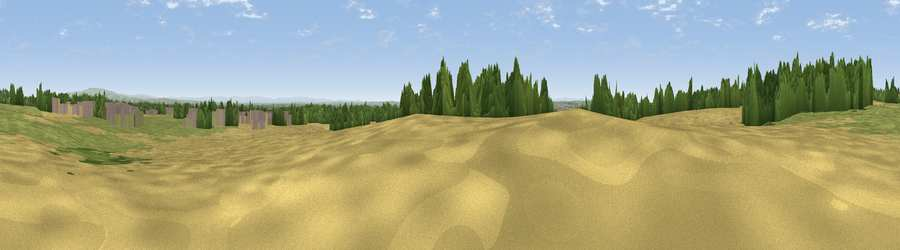

Weathercock Hill
#15956 in England · top 41% of its area beats it · near GarswoodThe view, rendered

A 360° render of this exact spot computed from the terrain model, tree cover and land cover — summer colours, afternoon light, calibrated against photographs of famous viewpoints. Real trees, hedges and buildings will differ in detail.
The panorama
Grey silhouette: terrain skyline in each direction (720 bearings, Earth curvature and refraction included). Dashed green: skyline with trees (+15 m) and buildings (+8 m) as obstacles. Blue strip: how far the ground is visible on each bearing.
Where the view opens
Wedge length = distance to the farthest visible ground on that bearing (vegetation-aware). Rings at 10, 25 and 50 km.
What fills the view
37% grassland · 33% cropland · 17% woodland · 12% built-up
Angular shares of the visible panorama (visual magnitude), not map area. Landscape diversity 0.57 (0–1 Shannon).
Key numbers
More beautiful places nearby
The staircase of upgrades: each row has a higher view potential than everything closer. Driving times are estimates from straight-line distance, calibrated against real road routing — check an actual route before setting out.
| Place | Direction | Drive | Score |
|---|---|---|---|
| Viewpoint near Billinge | NW · 2 km | ~6 min | 68.0 |
| Billinge Hill | NW · 3 km | ~7 min | 73.8 |
| Viewpoint near Dalton | NNW · 9 km | ~19 min | 74.2 |
| Rivington Pike | NE · 17 km | ~30 min | 81.9 |
| White Brow | NE · 17 km | ~30 min | 82.9 |
| Warton Crag | N · 73 km | ~97 min | 83.2 |
| Viewpoint near Grange-over-Sands | NNW · 80 km | ~104 min | 83.4 |
| Viewpoint near Cartmel | NNW · 82 km | ~106 min | 87.0 |
53.49204, -2.68640 · source: osm peak · position refined by local search. Computed location — check access rights before visiting.